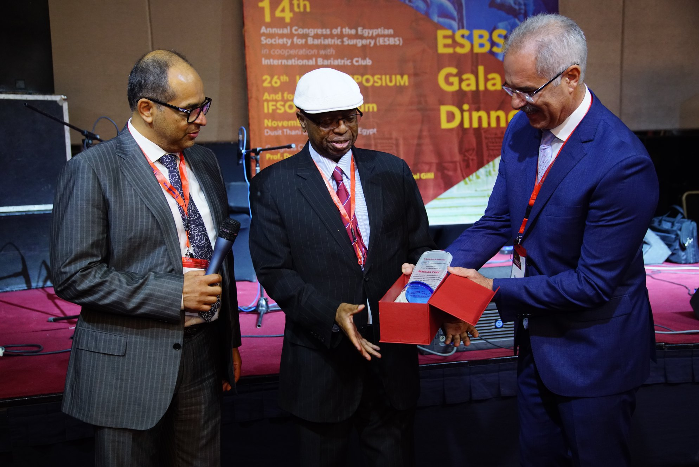
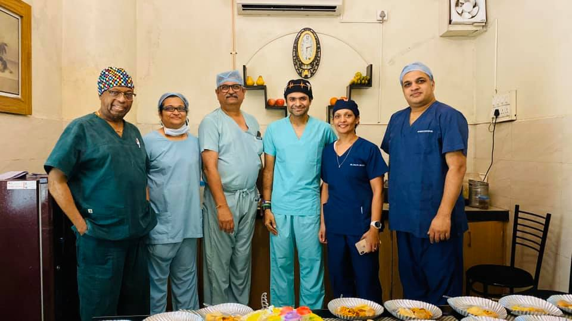
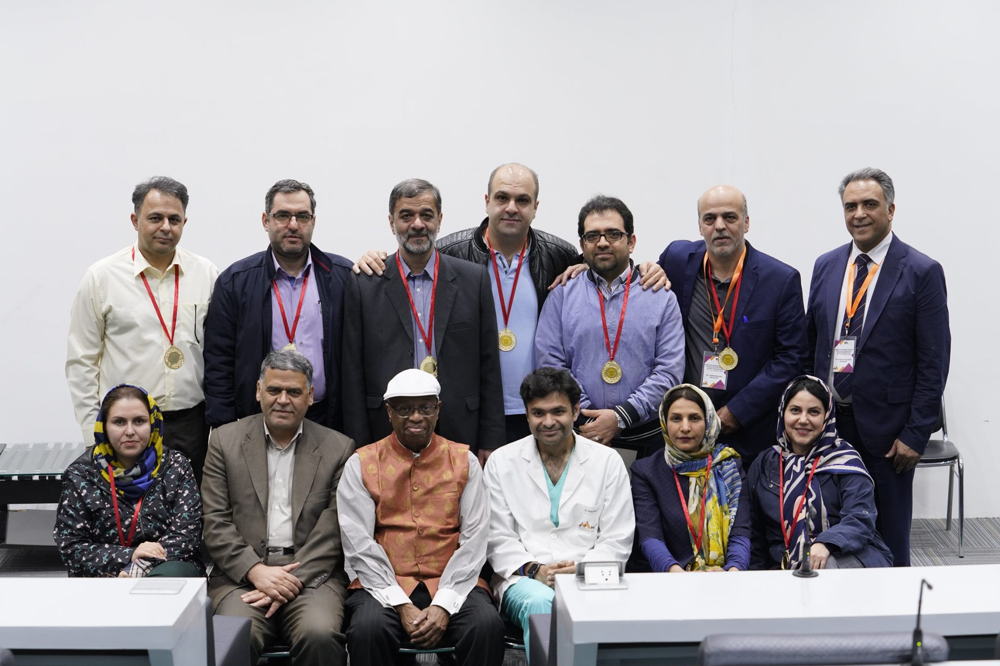
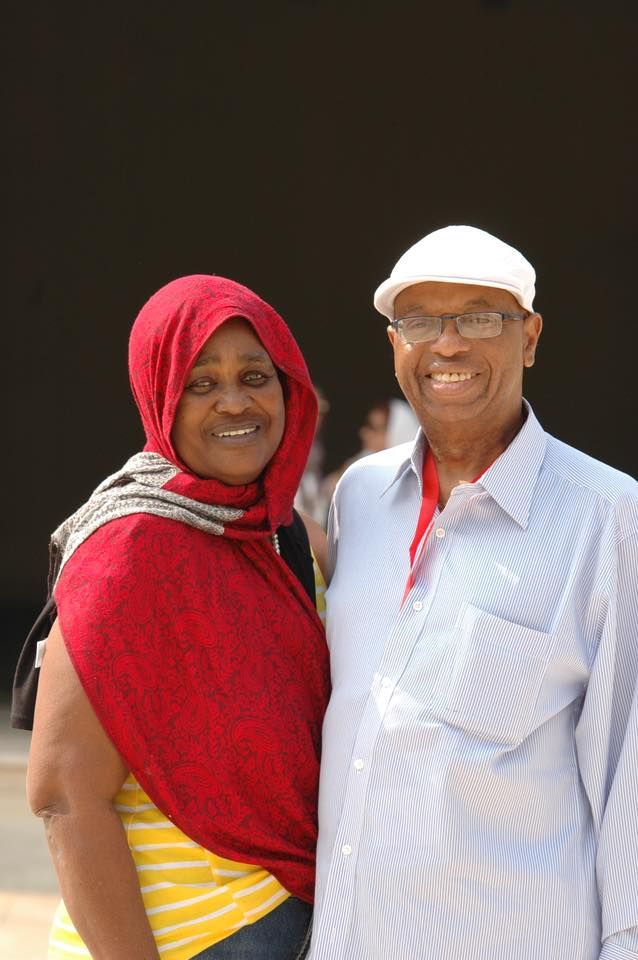
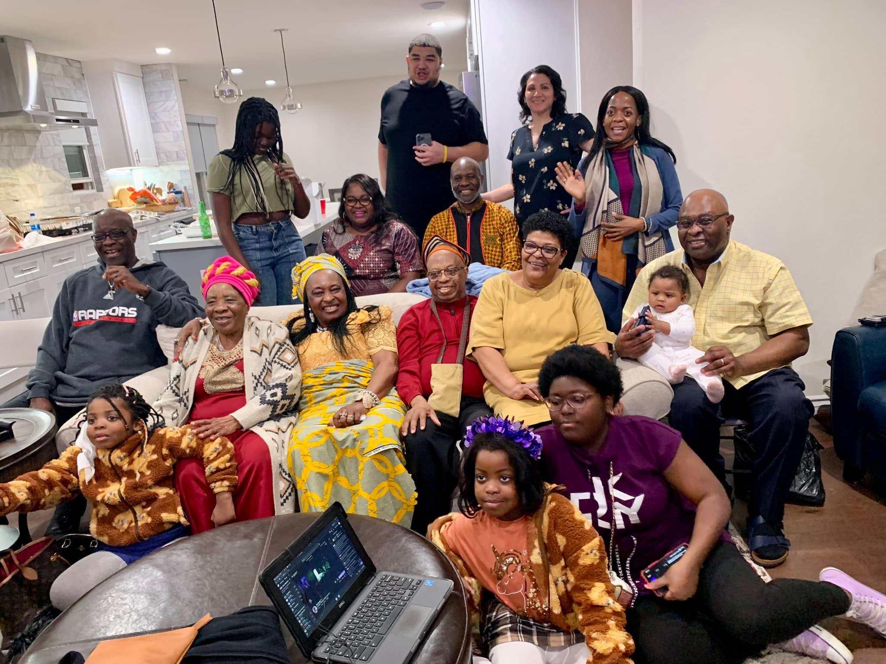

Photo Gallery




Celebrating a Life of Service
"Surgeon to the Stars" • Inventor of the Fobi Pouch • Pioneer in Bariatric Surgery
For Cameroon's Marginalized Youth
Colbert Gwain | The Muteff Factor
"In the quiet hills of Muteff near Abuh in Fundong Subdivision in the Boyo Division of Cameroon's North West Region, children grow up on a familiar promise. Cameroon, they are told, is a land full of milk and honey. Education is the ladder. Hard work is the key."
Yet across Cameroon today—especially among Anglophone youth—this disillusionment is palpable. Merit competes with patronage. Competence waits behind connections. The ladder exists, but it is not lowered evenly.
It is against this sobering landscape that the story of Dr. Mathias "Mal" Fobi must be understood. Born in 1946 in Nkwen, Bamenda, and raised in a humble farming family, Dr. Fobi's journey began far from the operating theatres of Hollywood. His performance earned him a scholarship to Lovanium University in Congo—but favoritism led to its revocation. For many, such a setback would have signaled the end of the road. For Dr. Fobi, it was merely a bend in it.
He reportedly appealed directly to Vice President John Ngu Foncha, demonstrating a resilience that would define his life. Though that opportunity slipped away, another emerged through the African Scholarship Program for American Universities (ASPAU). In 1966, he left Cameroon for the United States—armed not with influence, but with determination.
In America, Dr. Fobi earned a Pharmacy degree from the University of Michigan and later graduated from the University of Cincinnati College of Medicine in 1974. Over the next five decades, he built a remarkable career as a pioneering bariatric surgeon, credited with developing the renowned "Fobi Pouch" gastric bypass procedure.
Even with exceptional qualifications, Dr. Fobi was not insulated from discrimination in the United States, just like in Cameroon. He faced subtle barriers familiar to many immigrants: accent bias, credential skepticism, and the quiet demand to prove himself repeatedly. Yet in both contexts, he refused to internalize exclusion as destiny. He doubled down on competence.
Dr. Fobi's story is particularly resonant for Anglophone youth in Cameroon today, many of whom navigate entrenched marginalization, limited representation, and shrinking opportunities. Years of political tension and structural imbalance have deepened a sense of exclusion. The result is visible in chronic underemployment and an accelerating brain drain.
It would be dishonest to present Dr. Fobi as proof that discrimination does not exist. He is proof that it does—and that overcoming it often demands extraordinary resilience. For every Dr. Mal Fobi who breaks through, countless others remain stalled not by lack of talent, but by lack of access. That is why his life is both inspiration and indictment.
"Dr. Mal Fobi's life proves that Cameroonian talent can shape global innovation. The challenge before us is simpler, yet more urgent: can Cameroon build a system where its giants no longer have to survive discrimination before they can rise?"
About the Author: Colbert Gwain is a journalist and commentator focusing on Cameroonian politics, youth empowerment, and social justice. This piece originally appeared in The Muteff Factor (formerly The Colbert Factor).
Celebrating 80 Years of Impact, Leadership, Family & Service
September 25–27, 2026 | Atlanta, Georgia
Atlanta Marriott Northwest at Galleria
RSVP Now"For eight remarkable decades, Dr. Mal Fobi has embodied excellence, compassion, and unwavering dedication to family and community. This milestone celebration is not simply a birthday — it is a tribute to a life that has shaped generations, inspired leaders, and strengthened communities across continents. Join us as we honor a legacy still unfolding."
Legacy • Impact
Impact • Faith • Celebration
Gratitude • Farewell
Full Partiful link active! Click the RSVP button above to reserve your spot.
Save the date: September 25–27, 2026 • Atlanta, Georgia
Born on September 21, 1946, in the village of Nkwen, Cameroon, Dr. Mathias Asongwe Lawrence Fobi is a pioneering bariatric surgeon, educator, and philanthropist whose contributions have transformed weight-loss surgery globally. Known affectionately as the "Surgeon to the Stars" and "Uncle Mal," he is the inventor of the revolutionary "Fobi Pouch."
The youngest of seven children born to Vincent Tamfu Fobi, a farmer, and Barbara Ngeche Fobi, Mathias witnessed a local doctor save his mother from a severe asthma attack—a moment that ignited his lifelong passion for medicine. His journey took him from Sacred Heart College Mankon to Lovanium University in Congo, and eventually to the United States through the prestigious ASPAU scholarship.
Dr. Fobi completed his Pharmacy degree at the University of Michigan in just four years (a five-year program) and earned his medical degree from the University of Cincinnati College of Medicine in 1974, finishing in three years. His residency at King Drew Medical Center in Los Angeles led him to become Chief of the General Surgery Division.
Born September 21, 1946, in the village of Nkwen (now Bamenda III Council).
The youngest of seven children born to Vincent Tamfu Fobi, a farmer, and Barbara Ngeche Fobi.
Family values of hard work and community service shaped his early years.
Became one of the inaugural students, helping build the school.
One of the first students at this prestigious institution.
Helped physically construct the school buildings while excelling academically.
This experience taught him the value of hard work and dedication.
Received the prestigious ASPAU scholarship.
African Scholarship Program of American Universities (ASPAU) brought him to the United States.
This scholarship opened doors to world-class medical education.
His journey from Cameroon to America began.
Earned MD from University of Cincinnati, became Chief of Surgery.
University of Cincinnati College of Medicine - completed 4-year program in 3 years.
Completed Pharmacy degree at University of Michigan in 4 years (5-year program).
Residency at King Drew Medical Center, Los Angeles.
Eventually became Chief of the General Surgery Division.
Opened one of the first bariatric surgery centers in Los Angeles.
Pioneered the field of weight-loss surgery at his center in Los Angeles.
One of the first specialized bariatric surgery centers in the world.
Began developing what would become the Fobi Pouch.
Performed surgeries on Roseanne Barr, Randy Jackson, Jennifer Holiday.
His skill and discretion attracted high-profile clients.
Performed life-changing surgeries on numerous celebrities.
Helped destigmatize weight-loss surgery in the public eye.
Brought mainstream attention to bariatric surgery benefits.
President of ASMBS Foundation and IFSO.
ASMBS Foundation President (2005-2007).
IFSO President - International Federation for Surgery of Obesity (2008-2009).
Shaped global standards and practices in bariatric surgery.
Mentored surgeons worldwide through leadership roles.
Chaired IFSO Board, received Lifetime Achievement Awards.
Chaired the IFSO Board of Trustees.
Received ASMBS Lifetime Achievement Award.
Honored with IFSO Lifetime Membership.
Recognition for transformative contributions to metabolic and bariatric surgery.
Director at Mohak Bariatrics, Indore, India.
Director of Clinical Affairs & Research at Mohak Bariatrics and Robotics.
Continues mentoring the next generation of surgeons.
Leads philanthropic efforts through NGWEBIFOR Foundation.
Still actively changing lives through medicine and mentorship.
Invented the "Fobi Pouch" (banded gastric bypass), a modification using a silastic ring to prevent stomach pouch stretching. This innovation became the gold standard for long-term weight maintenance.
ASMBS Foundation President (2005-2007) and IFSO President (2008-2009). Chaired the IFSO Board of Trustees (2013-2015), shaping bariatric surgery worldwide.
Recipient of the ASMBS Lifetime Achievement Award and IFSO Lifetime Membership—recognizing his transformative contributions to metabolic and bariatric surgery.
Performed life-changing surgeries on celebrities including Roseanne Barr, Randy Jackson, and Jennifer Holiday, bringing bariatric surgery into the mainstream.
Founded the NGWEBIFOR Foundation (named after his grandmother) to send medical equipment and supplies to hospitals in Cameroon. Also established ACPA to support Cameroonian physicians.
As Director at Mohak Bariatrics, Indore, India, he mentored a new generation of surgeons. Known as "Uncle Mal," he sponsored countless students' education in Cameroon and the U.S.
Dr. Fobi is a devoted husband to his wife, Helen Jean N. Fobi, and a proud father to four accomplished daughters: a doctor, two lawyers, and a business executive. Despite his global fame, he remains "Uncle Mal" to his community—a figure of generosity who has sponsored the education of countless students in Cameroon and the United States.





September 21, 1946 — Nkwen, Cameroon
"Happy Birthday to the inventor of the Fobi Pouch, the Surgeon to the Stars, and our beloved Uncle Mal. Your legacy of healing, innovation, and generosity touches lives across continents. From Cameroon to California to India, you've made the world a better place. Wishing you health, happiness, and many more years of changing lives!"